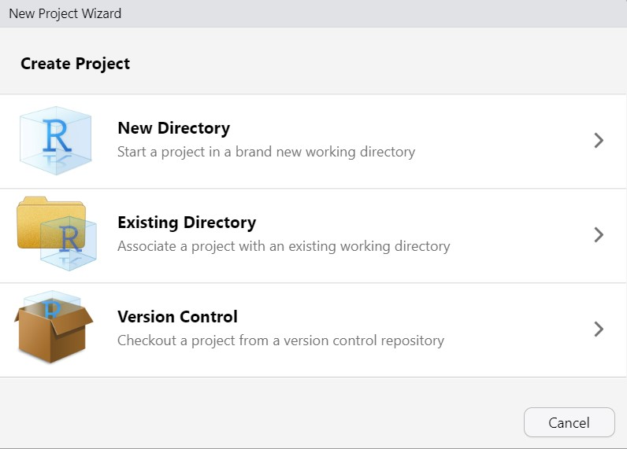
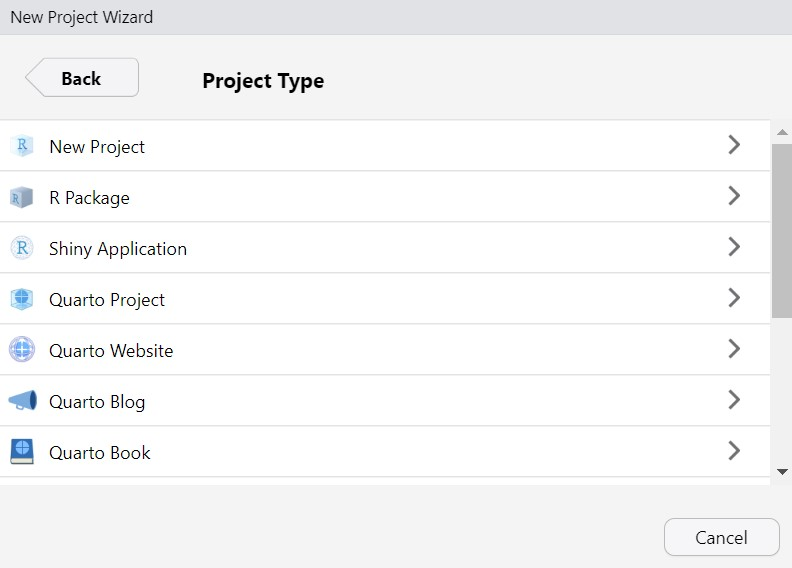
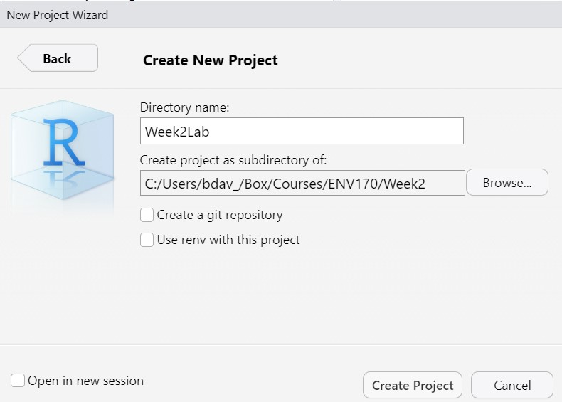
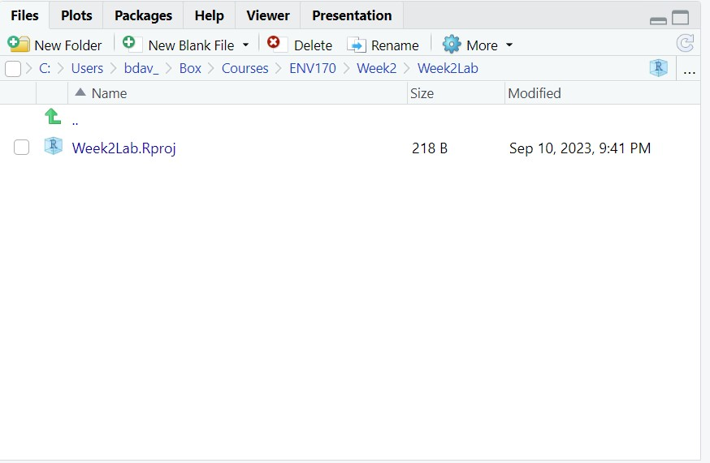
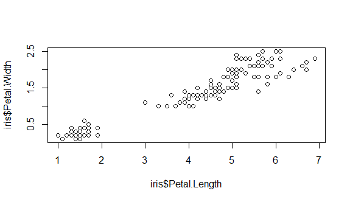
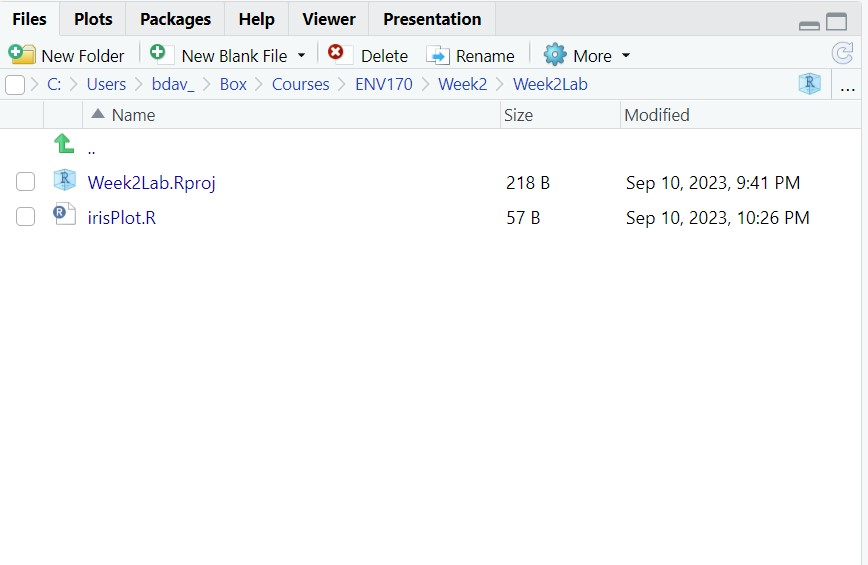
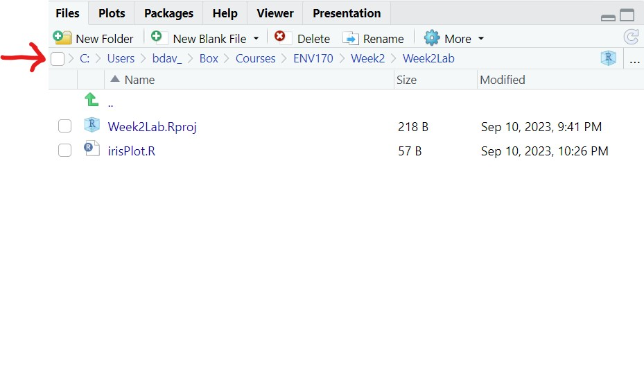
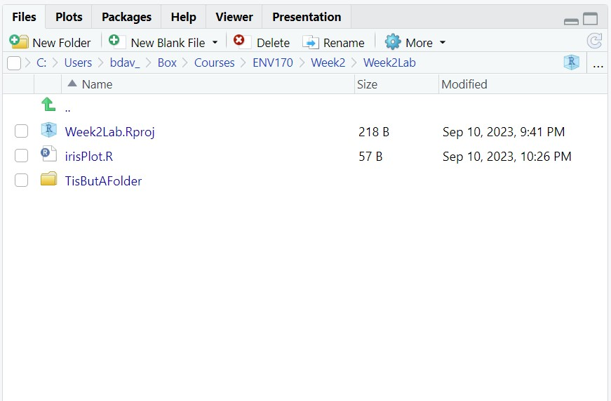
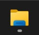
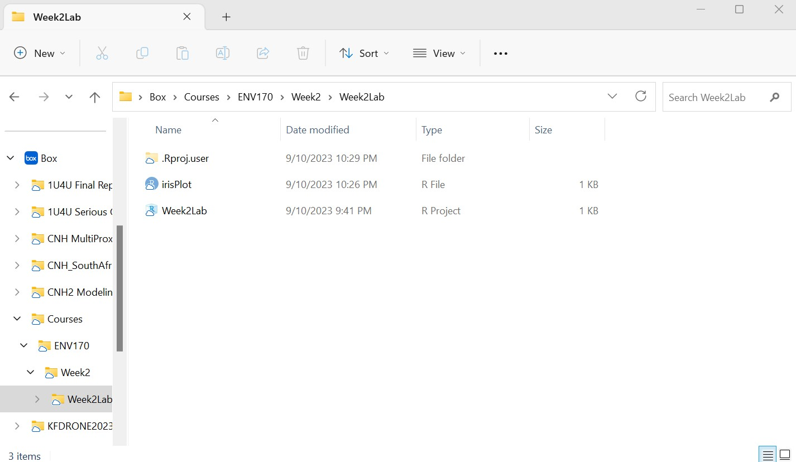

#plot iris data
plot(iris$Petal.Length,iris$Petal.Width)2 File systems in R
During the first lecture this week, we discussed some strategies for keeping files organized. Today’s lab will assume that you are using a hierarchical file structure that you are comfortable with.
R projects and the working directory
R projects are a useful way to keep track of all the files (scripts, data, and outputs) associated with a specific activity. Open the File drop-down menu and select New Project. You should see the following window:

Select New Directory. That will bring up this window:

This window gives you quite a few options for different project types. We’ll learn more about some of these, particularly Quarto documents, later in the course. These give us ways to combine code and text (and more) into a single, shareable document. The lecture slides and lab sheets are all generated as Quarto documents.
For now, let’s just select New Project. That brings up this window:

At this point, we are creating the working directory. The working directory is the current folder that R is using to read and write files.
You have two tasks here: the first is to figure out the folder where you want to put the working directory, and then to give the working directory its own a folder name. To figure out where to put the working directory, you can use the Browse button to navigate to the folder you want to use. We discussed hierarchical folder structures earlier this week, and I suggest keeping this in mind as you select a folder to store this project. As you can see in the image, I’m keeping things in Box, in a folder structure that goes
Box/Courses/ENV170/Week2
You may have a different structure that works for you. Whatever you do, don’t select a folder on a lab computer hard drive! These are wiped clean each night, which will erase any work you’ve done.
Now it’s time to name the working directory. I’m going to call this directory Week2Lab, and I suggest you do the same as it will help the rest of the lab make sense. In practice you can call this directory anything you like, but it’s worth keeping in mind some of the file naming conventions we discussed earlier. Once you’re done here, you can click Create Project.
Now RStudio should be open, with the R opening text in the console, and the Files tab open in the Output pane. It should look something like this:

This is showing the contents of the Week2Lab folder, which is our working directory. The only item inside should be the project (.Rproj) file, which tells R about the working directory and file environment when you open the project later.
The important thing to remember now is that this directory is where R is working. This means that R will assume that files you want to import will come from here, and any files it generates will be saved here by default.
Saving a file to the working directory
Let’s test this out. First, go to the File drop-down menu and select New, and then R Script. We used these last week, but as a reminder, these are text files that can be used to write and run R code.
Next, let’s add some code:
This code should look familiar: it’s the plot function, which creates a scatterplot using two vectors as the x and y variables. Here we are using it to plot the iris dataset: a well-known set of data about irises collected in the early 20th century. This is built in to R mostly for learning and testing purposes.
If you select this code and click Run (or push Ctrl + Enter), you should see a plot that looks like this:

You can take a minute to look at this plot and note any interesting patterns. To save the script, we can go to the File drop-down menu and select Save. This will bring up a dialog box that should show the working directory. Give the script file a name like irisPlot to indicate what it is and then click Save. You should now see it show up in the Files tab of the Output pane:

Working with directories
There are three main ways to interact with the file system in R: from the command line, from the File tab in the Output pane, and from outside of RStudio. You may find one of these works better for you, but you’ll also probably end up using all of these different approaches from time to time so it’s good to cover them all.
From the command line
From time to time, you may find that you are not sure which directory you are working in, especially if you end up opening files from multiple projects. To get the current working directory from R, you can use the getwd function:
getwd()
This returns the following directory path:
[1] "C:/Users/bdav_/Box/Courses/ENV170/Week2/Week2Lab"
Yours will likely look different than mine, but it should be the complete path all the way back to the hard drive where your work is stored (here it is the C drive). There’s a couple of interesting things to notice about this:
This function doesn’t take any arguments. There are a few function in R that don’t require any arguments to run, and this is one of them. In such cases, you can just use open and closed parentheses
()after the function name.When R refers to a directory path, it uses forward slash
/rather than the backslash (\). This is to avoid conflicts with string escapes (e.g.,\tto insert a horizontal tab in a character string). You can also use double backslash (\\).
If you ever need to manually change the working directory, you can use the setwd function, which only takes a string with the working directory. You can try this out with the following code, replacing your-working-directory with the path to your own working directory:
setwd("your-working-directory")
If you’ve forgotten what that path is, you can use getwd or you’ll see it at the top of the Files tab in the Output pane:

You can create a new folder inside the working directory (called a subdirectory) using the dir.create function. For example:
dir.create("TisButAFolder")
This function takes the name of a folder as a character string argument. Now if you look in the File tab, you should see this new subdirectory:

At this point you could save things to this folder, but let’s say we created this folder by mistake. We can delete a subdirectory using the unlink function:
unlink("TisButAFolder", recursive = TRUE)
Like magic, the folder is gone. The recursive = TRUE argument here tells R to delete the directory itself, not just the files within. There are additional functions for dealing with files from the command line, such as:
list.filesIf you provide a directory path to this function, it will tell you the names of all the files in it.list.dirsSame, but for subdirectoriesfile.chooseThis function will open a File Selection window that will allow you to navigate to file on your machine. It is another function that doesn’t require any arguments to run.
From the Files tab
The Files tab on RStudio looks much like a File Explorer window on most computers. Right now, it should be pointed at the working directory, so you should be able to see the R project file and the irisPlot.R script. There’s a few different ways to navigate here:
Try clicking on the two-dot ellipsis (..) at the top of the list. This will take you into the next folder level up, also called the parent directory. In my case, this is the Week2 folder.
Try clicking on the folder called Week2Lab. This will take you back into that directory.
Try clicking on the three-dot ellipsis (…) at the far right of the This opens up a File Explorer window where you can navigate to a new directory. Use this to back up to the parent directory.
Click the small blue cube with an R in it next to the three-dot ellipsis. This will immediately take you back to the working directory.
There are a few buttons at the top of this window to do some additional file operations. We’ll look at first three:
New Folder This will let you add a new subdirectory in whatever directory you are currently viewing. Create one called TisButAnotherFolder. Click OK. Once it is there, click on that folder to open it.
New Blank File This is a drop-down menu to quickly create a blank file. Create an R Script called TisButAScript.R. Click OK, then use the R cube button to return to the working directory.
Delete This deletes whatever is selected in the File tab. Click the check box next to the TisButAnotherFolder folder and click delete. You’ll get a warning about this being permanent. Click Yes. You’ll then get a second warning about the script we had in there.
It’s also worth taking a look at the More drop-down menu, as this has a number of other file operations, like Copy and Paste. The Set As Working Directory option will turn whatever folder is open in the File tab and turn that into the working directory. Finally, you can use Show Folder in New Window to open the current folder in a File Explorer window outside of R. Try that one out before we move on to the next section.
From outside RStudio
It’s really important to recognize that the file structures we are using in RStudio are also part of the file system of the computer you are working on. It can be helpful to know how to access these folders and files from outside R as well. Here, I’ll explain how to do this if your setup is similar to mine, using Windows 11 and Box.
Open the File Explorer by clicking the folder icon on the taskbar. Looks like this:

On the left-hand side, you should see a series of options for different directories (e.g., Desktop, Download, etc.). Navigate to Box and expand it.
Inside Box, you’ll have a set of subdirectories based on what you have saved there. Navigate to the top-level folder where you keep your coursework and expand it. For me, this is a folder called Courses.
Continue to expand until you reach the folder where your project is stored, the working directory. Remember, you can always check this using
getwd()or looking at the top of the File tab. For me, this is Courses/ENV170/Week2/Week2LabHighlight that folder
Now you should be in a folder that looks like this:

Congrats, you’re in the working directory! You can now use the mouse to add files by dragging them, or your can copy and paste them from another folder. To delete files, just highlight them and press delete!
The way to find your working directory outside RStudio will vary somewhat between operating systems (e.g., Windows, iOS, Linux) and hardware configurations (hard drives, partitions, etc.). This will also be true if you’re working from a cloud-based storage option like Box that you access from more than one machine. For this reason, it is a good idea to get familiar with how folders and files are organized on your computer.
Try it yourself!
As the course goes on, you’ll be downloading data from a number of different sources, and this data will need to make its way to your R project. Let’s get used to doing this whenever we start a lab or assignment.
From the File tab, create a new subdirectory in your working directory called Code and move the irisPlot.R file there.
From the command line, create new subdirectories in your working directory called Data and Outputs
Go to the Week 2 module on Canvas and download the Week2Data.zip file to the Downloads folder on your computer.
From outside of R, find the Week2Data.zip file and unzip it in your Downloads folder, then move the contents ofthat folder to the Data subdirectory (there should be no additional subdirectories inside your Data folder)
This section is meant to help you become familiar with how to work with file systems. The most important thing is that you try and keep the files associated with a project together in a working directory and to keep that directory organized. It’s OK if you don’t know exactly where things are yet, or all of the functions you’d use, just remember that you have a few different options as how to navigate the file system.